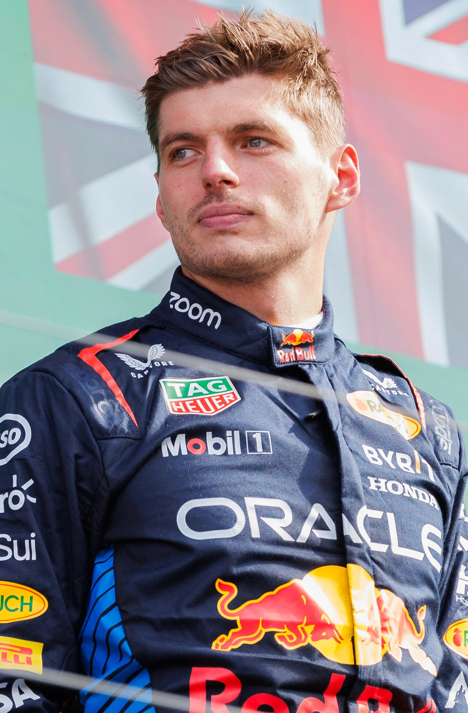

SINTESI DELLA STAGIONE 2024 - IL TRIONFO DI MAX VERSTAPPEN
Era Effetto Suolo • 24 Gran Premi disputati

La stagione 2024 è stata la più equilibrata e avvincente dell'ultimo decennio, con ben sette vincitori diversi per quattro scuderie differenti (Red Bull, McLaren, Ferrari, Mercedes). Dopo un avvio travolgente di Max Verstappen, la McLaren con la MCL38 e la Ferrari con la SF-24 hanno ribaltato la gerarchia tecnica. Nonostante le difficoltà di bilanciamento della Red Bull, Verstappen ha fatto la differenza con la sua classe sopraffina, conquistando il 4° titolo a Las Vegas, mentre la McLaren ha coronato una stagione storica vincendo il Mondiale Costruttori dopo 26 anni di digiuno.
🏆 Campione del Mondo Piloti: Max Verstappen (Red Bull Racing) - 437 pt
🥈 Secondo classificato: Lando Norris (374 pt)
🏁 Scuderia Campione Costruttori: McLaren
🏎️ Numero Gran Premi: 24
LA MIGLIOR GARA DELL'ANNO: GRAN PREMIO DI SAN PAOLO (BRASILE, INTERLAGOS)
Circuito: Autódromo José Carlos Pace (Interlagos)
Sotto una pioggia tropicale torrenziale che ha costretto piloti esperti a commettere errori continui, Max Verstappen ha scritto una delle pagine più indelebili della storia della Formula 1. Costretto a scattare dalla 17ª posizione in griglia a causa di una bandiera rossa in qualifica e della penalità motore, il fenomeno olandese si è reso protagonista di una cavalcata prodigiosa: sorpassando ben 16 monoposto su un asfalto allagato, Verstappen ha preso il comando della corsa dopo la bandiera rossa e ha fatto segnare ben 17 giri più veloci consecutivi, vincendo con oltre 19 secondi di margine e ipotecando il suo quarto titolo mondiale.
IL SORPASSO PIÙ SPETTACOLARE & DUELLO DELL'ANNO
La staccata da oltre 60 metri di Oscar Piastri su Charles Leclerc a Baku
Al Gran Premio dell'Azerbaigian, Oscar Piastri ha compiuto una manovra da antologia: arrivando sul rettilineo principale a oltre 340 km/h con la McLaren, ha scartato all'interno a una distanza proibitiva da Charles Leclerc, frenando su un asfalto sporchissimo e riuscendo a chiudere la curva 1 senza bloccaggi per conquistare la testa della corsa e una vittoria trionfale.